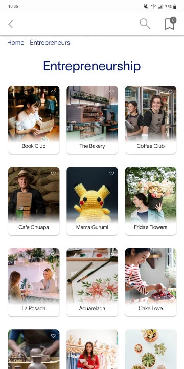
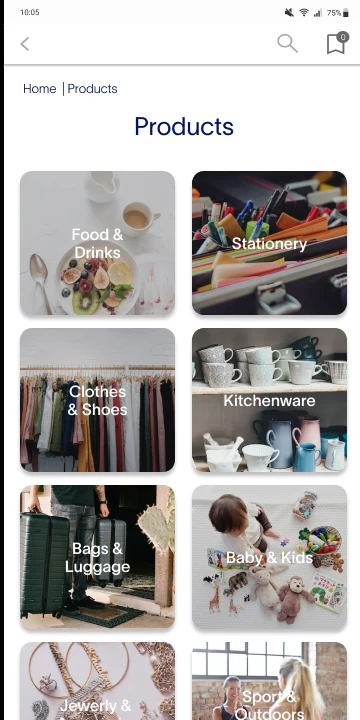
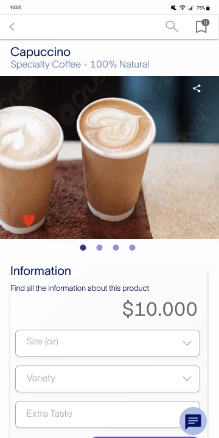
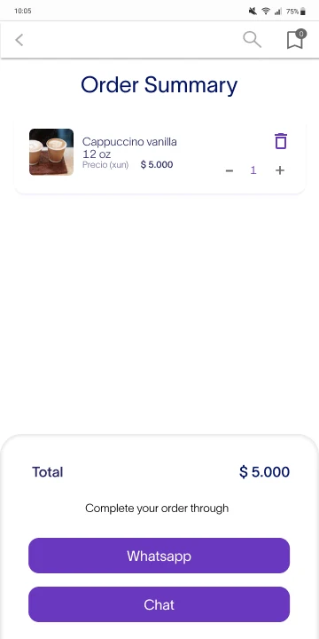

Mobile app · Marketplace · 2022App móvil · Marketplace · 2022
ComunidAPP
A mobile marketplace that helps SLB employees and their families promote their small businesses — and connect with colleagues around the world. Un marketplace móvil para que los colaboradores de SLB y sus familias promocionen sus emprendimientos y se conecten con colegas de todo el mundo.


- The problemEl problema
- SLB teams travel constantly and have few chances to meet colleagues from other areas — and their family businesses have nowhere to be promoted.Los equipos de SLB viajan constantemente y tienen pocas oportunidades de conocer colegas de otras áreas, y sus emprendimientos familiares no tienen dónde promocionarse.
- What I didQué hice
- Interviewed 7 users, defined the persona and insights, designed the user flow, the UI kit and a high-fidelity mobile prototype.Entrevisté a 7 usuarios, definí la persona y los insights, diseñé el user flow, el UI kit y un prototipo móvil de alta fidelidad.
- The resultEl resultado
- A functional MVP prototype where purchases close through WhatsApp or in-app chat — no payment gateway needed.Un prototipo funcional de MVP donde la compra se concreta por WhatsApp o chat interno, sin necesidad de pasarela de pagos.
- RoleRol
- UX UI Designer
- TimelineFecha
- August 2022Agosto 2022
- MethodologyMetodología
- Design Thinking · Double Diamond
- ToolsHerramientas
- Figma · Maze · Trello
The contextEl contexto
A community app for people who are always on the moveUna app de comunidad para personas que siempre están en movimiento
ComunidAPP is an initiative to bring SLB employees together as a community by sharing common interests. It has two core functions: a marketplace to promote the ventures of employees and their families, and networking to connect people through groups and events.ComunidAPP es una iniciativa para integrar a los colaboradores de SLB como comunidad a partir de intereses comunes. Tiene dos funciones clave: un marketplace para promocionar los emprendimientos de colaboradores y sus familias, y networking para conectar personas mediante grupos y eventos.
The goals for the first MVP: an accessible, easy-to-use marketplace, a secure navigation experience, and a prototype without payment gateways.Los objetivos del primer MVP: un marketplace accesible y fácil de usar, una navegación segura y un prototipo sin pasarela de pagos.
ResearchInvestigación
Users wanted to know exactly who they were buying fromLos usuarios querían saber exactamente a quién le compraban
I ran 7 in-depth interviews to understand pain points and needs, and synthesized them into a persona: Joaquín, 35, an industrial engineer in Colombia who travels for work, has little free time and finds it hard to ask for recommendations or build support networks in each new place.Realicé 7 entrevistas en profundidad para entender dolores y necesidades, y las sinteticé en una persona: Joaquín, 35 años, ingeniero industrial en Colombia, que viaja por trabajo, tiene poco tiempo libre y le cuesta pedir recomendaciones o armar redes de apoyo en cada lugar nuevo.
- “I would appreciate it if this marketplace is easy to use, truthful, reliable, and shows me who the seller is.”“Valoraría que el marketplace sea fácil de usar, veraz, confiable y que me muestre quién es el vendedor.”
- “I would like products displayed by categories, and very well detailed.”“Me gustaría que los productos se muestren por categorías y muy bien detallados.”
- “Communication through in-app messaging, or another network like WhatsApp, is necessary.”“Es necesaria la comunicación por mensajería en la app o por otra red como WhatsApp.”
- 01
Clear and trustworthyClaro y confiable
Users expect a marketplace that is clear, reliable and truthful, with a simple purchase process.Los usuarios esperan un marketplace claro, confiable y veraz, con un proceso de compra simple.
- 02
A non-corporate spaceUn espacio no corporativo
They value it as a new space to socialize, support colleagues and build community.Lo valoran como un espacio nuevo para socializar, apoyar a sus colegas y crear comunidad.
- 03
Buying as if in personComprar como en persona
They look for details that confirm the product meets their needs before buying.Buscan detalles que confirmen que el producto cumple sus necesidades antes de comprar.
How I designed itCómo lo diseñé
Design Thinking, structured with the Double DiamondDesign Thinking, estructurado con el Double Diamond
- 01
Empathize & discoverEmpatizar y descubrir
Desk research, benchmarking, scope canvas, stakeholder mapping and user interviews.Desk research, benchmarking, scope canvas, mapa de stakeholders y entrevistas con usuarios.
- 02
DefineDefinir
Hypotheses, information analysis, findings and insights, user persona and journey map.Hipótesis, análisis de información, hallazgos e insights, user persona y journey map.
- 03
IdeateIdear
“How Might We” questions and brainstorming, a prioritization matrix, user flow, site map and sketches.Preguntas “¿Cómo podríamos…?” y brainstorming, matriz de priorización, user flow, mapa de sitio y bocetos.
- 04
Prototype & testPrototipar y testear
A UI kit, then medium- and high-fidelity prototypes, tested with users in Maze.Un UI kit y luego prototipos de media y alta fidelidad, testeados con usuarios en Maze.
The solutionLa solución
Visual browsing, real sellers and a checkout through chatNavegación visual, vendedores reales y compra por chat
Every screen answers an insight: categories and ventures are shown visually, each seller has a profile with contact and social links to build trust, product pages give the details people need, and the order is completed through WhatsApp or in-app chat.Cada pantalla responde a un insight: categorías y emprendimientos se muestran de forma visual, cada vendedor tiene un perfil con contacto y redes para generar confianza, el detalle de producto da la información necesaria y el pedido se concreta por WhatsApp o chat interno.



What I learnedQué aprendí
Good research is only as useful as the team’s communicationLa buena investigación vale tanto como la comunicación del equipo
- Assertive communication matters, especially in large teams.La comunicación asertiva es clave, sobre todo en equipos grandes.
- Maze helped me understand user testing in more depth.Maze me ayudó a entender las pruebas con usuarios con más profundidad.
- Prioritizing activities keeps a project focused.Priorizar las actividades mantiene el proyecto enfocado.
Next projectSiguiente proyecto
Maintenance PSA
Read the case studyLeer el caso de estudio← Previous projectProyecto anterior · All projectsTodos los proyectos
Contact MeContáctame
Let's explore the exciting project you'd like to dive into!¡Hablemos del proyecto que tienes en mente y hagámoslo realidad!